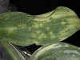
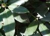
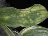
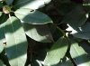
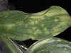
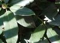
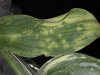
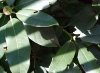

Diagnosing Foliage Problems
Here's a quick guide to diagnosing common problems with plant foliage.
Click an image to see a larger version.


  
 
From left to right: Yellow, Necrotic Spots, White Powder, Light and Dark Green Areas, Holes or Chewed Areas
- Yellow
- Wet soil
- Low fertility
- Root rot pathogens
- Roots cut or damaged
- Nematodes
- Necrotic spots
- White powder
- Light and dark green areas
- Holes or chewed areas
Copyright ? 2012 The Garden Company™
No material may be reproduced without written permission
Contact the Webmaster


  
 